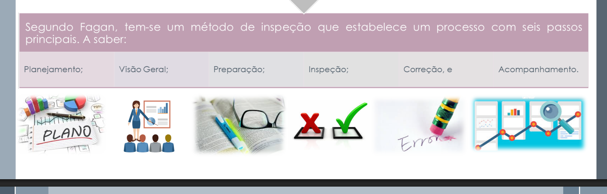

Tabela de Contribuição
| Membro | Contribuição |
|---|---|
| Daniel da Silva Batista | Estruturação da Etapa 8, descrição do método de inspeção de Fagan e planejamento da verificação (escopo, papéis, composição das listas e cronograma) (Método de Inspeção de Fagan). |
| Arthur Sismene Carvalho | Elaboração dos itens 06 a 10 das 5 listas v2 (HTA, CTT, Storyboard, Protótipo de Papel e Protótipo de Alta Fidelidade); recortes do livro a inserir (Composição das Listas de Verificação). |
| Pedro Rocha Ferreira Lima | Elaboração dos itens 11 a 15 das 12 listas de verificação (Composição das Listas de Verificação). |
| Claude (Anthropic) | Apoio na organização da página (conforme Política de IA). |
Fonte: Daniel da Silva Batista (2026).
Verificação — Etapa 8 (Inspeção de Fagan)
1. Introdução
A Etapa 8 verifica os artefatos produzidos pelo Grupo 07 ao longo do projeto. A verificação é feita por inspeção, técnica proposta por Fagan (1976): os artefatos são examinados por integrantes que não são seus autores, com o apoio de listas de verificação, para encontrar e corrigir defeitos antes da entrega final.
Para isso, o grupo elabora uma lista de verificação para cada tipo de artefato de IHC (análise de tarefas, storyboard, protótipos, testes com usuários etc.) e depois inspeciona os próprios artefatos com essas listas. As listas cobrem os artefatos de análise, design e avaliação do projeto; os artefatos de gestão (equipe, cronograma, atas e ferramentas) e os de caráter descritivo (aspectos éticos, processo de design, sites avaliados, plataforma, princípios, metas e guia de estilo) não fazem parte da inspeção. As listas que já existiam em etapas anteriores ganham uma versão 2 (v2), com link para a versão original (v1).
2. Método de Inspeção de Fagan
Segundo Fagan (1976), a inspeção segue um processo com seis passos principais, apresentados na Figura 1:
Figura 1: Os Seis Passos do Método de Inspeção de Fagan

Fonte: SALES (2026), com base em FAGAN (1976).
A Tabela 1 descreve como cada passo é aplicado nesta etapa:
Tabela 1: Aplicação dos Passos de Fagan na Etapa 8
| Passo | O que é feito | Registro |
|---|---|---|
| 1. Planejamento | Definir os artefatos a inspecionar, as listas de verificação de cada tipo de artefato, os papéis (autor e inspetor) e o cronograma. | Esta página (Seção 3). |
| 2. Visão Geral | No início do vídeo de inspeção de cada artefato, o inspetor apresenta o artefato: o que é, qual tarefa cobre e onde está publicado. | Vídeo de inspeção e ficha de inspeção. |
| 3. Preparação | Cada inspetor estuda sozinho o artefato que vai inspecionar, com a lista de verificação correspondente, e anota possíveis defeitos. | Anotações do inspetor. |
| 4. Inspeção | Em um vídeo por artefato, a lista é aplicada item a item (Sim, Não ou Incompleto) e cada defeito encontrado é registrado. Nenhuma correção é feita nesse momento. | Ficha de inspeção de cada artefato. |
| 5. Correção | O autor corrige os defeitos registrados no artefato. | Ficha de inspeção, com o link da correção. |
| 6. Acompanhamento | O inspetor confere se cada correção resolveu o defeito e decide se o artefato está aprovado ou precisa de nova inspeção. | Ficha de inspeção e quadro-resumo. |
Fonte: Daniel da Silva Batista (2026), com base em FAGAN (1976).
3. Planejamento da Verificação
3.1 Composição das Listas de Verificação
Cada lista de verificação tem 15 itens, e cada integrante elabora 5 deles. Os itens seguem as regras abaixo:
- cada item é uma pergunta objetiva, que pode ser respondida com Sim, Não ou Incompleto;
- a pergunta é autoexplicativa: termos técnicos vêm acompanhados de uma explicação entre parênteses, para que alguém que não conhece o artefato entenda o que está sendo verificado;
- cada item indica o autor, a fonte (obra e página) e o recorte do livro que o fundamenta.
3.2 Papéis
Na inspeção, ninguém inspeciona o próprio artefato. Fagan (1976) prevê também um moderador; neste projeto, pelo tamanho do grupo, as funções do moderador ficam com o inspetor. Os papéis são:
- Autor — quem elaborou o artefato; apresenta a visão geral e corrige os defeitos;
- Inspetor — conduz a inspeção, aplica a lista de verificação ao artefato, registra os defeitos e, no acompanhamento, confere as correções.
3.3 Listas de Verificação
A Tabela 2 apresenta as listas de verificação da Etapa 8, os artefatos a que se aplicam e a versão anterior, quando existe:
Tabela 2: Listas de Verificação da Etapa 8
| Lista | Versão | Aplica-se a | Versão anterior |
|---|---|---|---|
| HTA | v2 | Análise de Tarefas — HTA | v1 (Etapa 4) |
| CTT | v2 | Análise de Tarefas — CTT | v1 (Etapa 4) |
| Storyboard | v2 | Storyboards SB-01 a SB-04 | v1 (Etapa 4) |
| Protótipo de Papel | v2 | Relatos do protótipo de papel | Autoinspeções de Daniel, Arthur e Pedro |
| Protótipo de Alta Fidelidade | v2 | Relatos do protótipo de alta fidelidade | Autoinspeções de Daniel, Arthur, Leonardo e Pedro |
| Planejamento da Avaliação | v1 | Planejamentos da avaliação (DECIDE) | — |
| Planejamento do Relato | v1 | Planejamentos do relato dos resultados | — |
| Teste-Piloto | v1 | Teste-piloto e pilotos dos relatos | — |
| Teste de Usabilidade | v1 | Sessões com usuários dos relatos | — |
| Perfil de Usuário | v1 | Perfil do Usuário (entrevistas e questionários) | — |
| Personas | v1 | Personas | — |
| Cenários | v1 | Cenários | — |
Fonte: Daniel da Silva Batista (2026).
3.4 Fichas de Inspeção
A inspeção de cada conjunto de artefatos é registrada em uma ficha própria, com os seis passos de Fagan:
- Daniel da Silva Batista: inspeção dos artefatos de Pedro Rocha Ferreira Lima.
- Grupo 06 (Grupo -1): inspeção de um exemplo de cada artefato do Grupo 06, com as 12 listas.
- Grupo 08 (Grupo +1): inspeção de um exemplo de cada artefato do Grupo 08, com as 12 listas.
3.5 Cronograma
A Tabela 3 apresenta o cronograma da verificação:
Tabela 3: Cronograma da Verificação da Etapa 8
| Data | Passo de Fagan | Atividade |
|---|---|---|
| 21/11/2026 | Planejamento | Definição do método, das listas e dos papéis; elaboração dos itens de cada integrante. |
| 22/11/2026 | Visão Geral, Preparação e Inspeção | Gravação de um vídeo de inspeção por artefato: visão geral do artefato e aplicação da lista. |
| 22/11/2026 | Correção e Acompanhamento | Correção dos defeitos encontrados e conferência pelo inspetor. |
Fonte: Daniel da Silva Batista (2026).
4. Referências Bibliográficas
[1] FAGAN, Michael E. Design and code inspections to reduce errors in program development. IBM Systems Journal, v. 15, n. 3, p. 182-211, 1976.
[2] SALES, André Barros de. Plano de ensino FIHC 022026 – Turma 01. Brasília: FCTE/UnB, 2026.
5. Histórico de Versões
| Versão | Data | Descrição | Autor(es) | Revisor(es) |
|---|---|---|---|---|
1.0 |
21/11/2026 | Criação da página da Etapa 8: método de inspeção de Fagan, planejamento da verificação e catálogo das listas de verificação. | Daniel da Silva Batista | — |